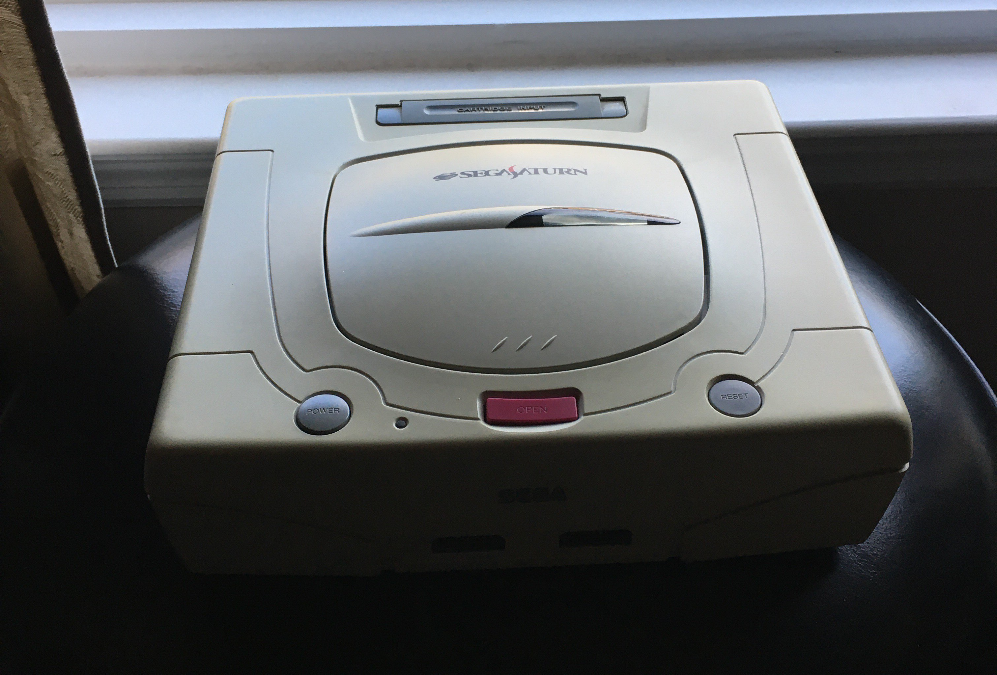
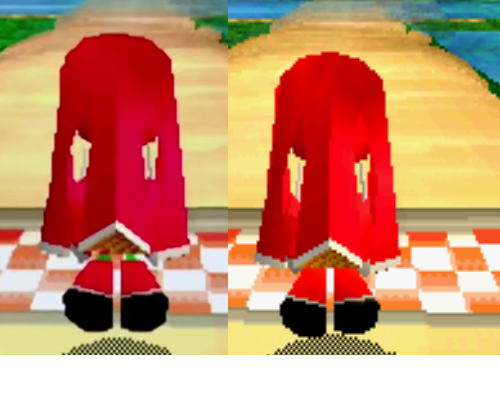

SEGA Saturn Restoration
A few years ago I bought myself a Japanese SEGA Saturn off of eBay with a broken disk drive. Now, I've gotten it to run games finally using a recent flashcart known as a Saroo. This will be doccumenting my attempts to restore and maximize the hardware and Saroo for playing games again. I've already gotten into a good spot with that, but there's places to go and I want to doccument what I've done. Below is an image of my Saturn.

Color Trouble
For the time being, I have a cheap A/V to HDMI converter cable from Amazon. For a while, I believed the Saturn itself had issues with the A/V output and it still might going off of how it looked prior to being cleaned. However, after cleaning it, the image became a lot more clear and the cable is seemingly the cause of color distortion compared to the original goal. Notice just how more pink the image on the left is.

Hardware, Supplies, Tools
Hardware
- SEGA Saturn
- Saroo Flashcart
- Controllers
- Scaler Cable